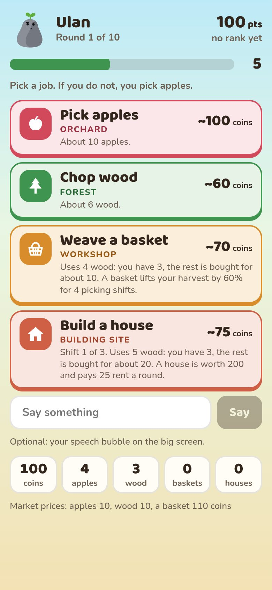
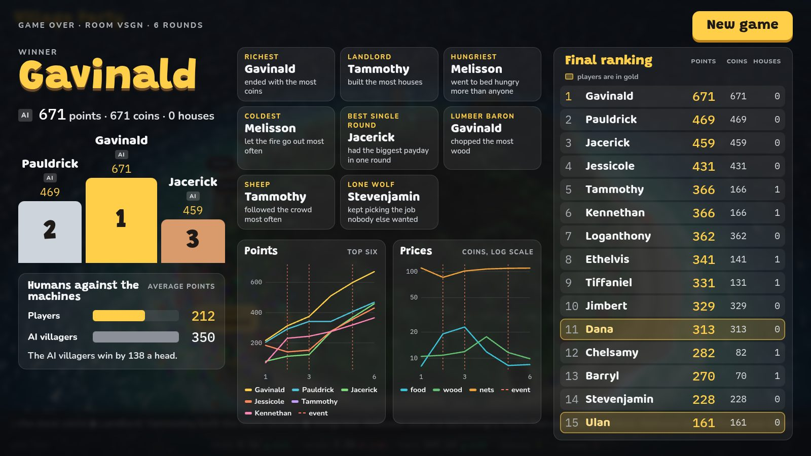

Your phone is a villager. The big screen is a living island. The economy pushes back.
Trivia rewards what you know, dice reward nobody. Nothing you choose depends on what the room chooses.
Trading games have fixed prices and long rulebooks. Fun for four people at a table, not forty at a meetup.
App installs, accounts, and a dead lobby if only three people show up.

planner · contrarian · trend-chaser · landlord · specialist · basket-maker · copycat · gambler
greedy · lazy · paranoid · dreamer · gossip · philosopher · dramatic · competitive
Strategy agents: every round each villager reads last round's prices, the crowd and the weather, and plays its strategy. Instant, free, and benchmarked over 1,000 seeded games (next slide).
LLM agents: one structured call decides for 12 villagers in their own voice, with a timeout fallback and a budget cap. A round never stalls.
careful play beats casual play
of half-time leaders still lose
best vs worst starting talent: skill, not luck
of villager-rounds go hungry
Next on the bench: plug any model in as a villager and score it against these baselines on the same seeds. Humans, scripts and LLMs on one leaderboard.

No pure strategy wins. Reading the room wins.
One Node process, no framework · Server-Sent Events to the big screen · SQLite game history · three.js island · React phone controller · npm test covers engine + API
candidate economies
careful play over casual
half-time leader still loses
villagers in one room, humans + AI. Late joiners take over an AI villager
apps to install. Phones join in the browser by QR or a 4-letter code
a round. It ends early as soon as everyone has picked
villager types: 8 strategies × 8 personalities, 116 hand-written lines
to simulate 1,000 whole games (40 villagers, 12 rounds) on a laptop
AI villagers decided per OpenAI request, each in its own voice
hard spend cap per game. A default game is estimated at under a cent
candidate economies × seeded games in the economy lab
Game loop, host overlay and phone UI, tests, the balance harness, and the docs. Devin even played full games in a headless browser to take the screenshots.
Giving the agent a way to check itself. The simulator and the economy lab turned "is it balanced?" into numbers instead of vibes.
Knowing what's fun, not just fair, needed a human. LLM villagers needed hard guarantees so a slow model can never freeze a room.
New today: the game, its market and rules, the AI villagers and the phone controller. The 3D island and villager names are reused from our earlier sim.
Scan, pick a job, and beat the machines.
npm start → host on :8787 · phones on /play